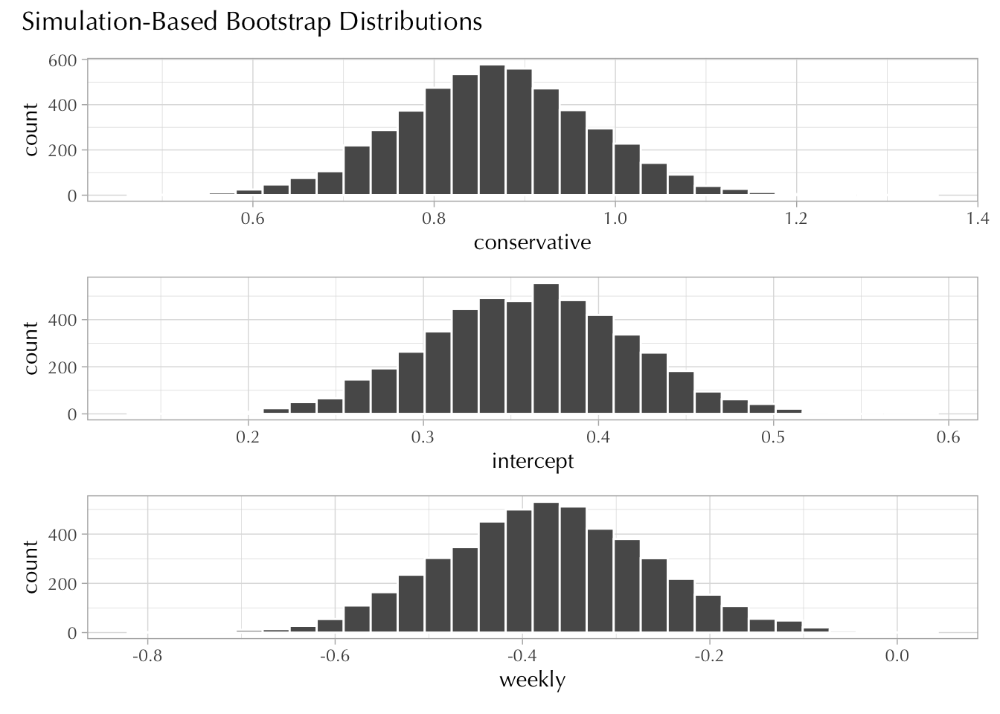

Note that the number of columns in X corresponds to the number of parameters in the model.
The cappun ~ degree formula is more interesting because “degree” is not a numeric vector, it contains five categories.
Code
count(d, degree)
# A tibble: 5 × 2
degree n
<fct> <int>
1 less than high school 215
2 high school 1053
3 associate/junior college 176
4 bachelor's 430
5 graduate 228
If you don’t know already, factor vectors are like “character” vectors with the exception that we can order them in different ways (not just alphabetical) and they are more memory efficient.
Under the hood, degree is represented as an integer vector of length 2102 with an associated character vector of length five called “levels.”
Code
levels(d$degree)
[1] "less than high school" "high school"
[3] "associate/junior college" "bachelor's"
[5] "graduate"
So, the formula will take the first level of degree and treat it as a “reference category.” Then it will proceed to create 4 indicator variable columns.
Clearly, models 3 and 4 are estimated to have a better out-of-sample predictive accuracy. However, whereas AIC tells us that model 4 (with the interaction) is better, BIC tells us the opposite. Steve prefers BIC because it’s more conservative and being conservative in statistics may actually be a good thing.
Interpret the intercept in all models.
All intercepts are log-odds of favoring the death penalty, conditional on the fact that the predictors are set to zero. For models 1 and 2, the intercepts can be transformed into the probability that a non-conservative who doesn’t go to church weekly favors capital punishment.
For models 2 and 4, the intercepts are the log-odds of favoring the death penalty, conditional on the fact that the respondent is moderate and doesn’t attend church weekly. This is because I transformed polviews to go from -3 to +3 such that the 0 value corresponds to “moderate, middle of the road.”
Looking at mod4, what is the predicted probability that a “slightly conservative” individual that attends religious ceremonies weekly favors capital punishment?
Code
inv_logit(0.677-0.451+0.441-0.138)
[1] 0.6292498
Note. You can also use the predict() or broom::augment() functions to answer this question.
Code
new_df <-tibble(polviews =1, weekly =1)predict(mod4, newdata = new_df, type ="response")
d <- d |>mutate(polviews2 =case_when( polviews <0~"liberal", polviews ==0~"moderate", polviews >0~"conservative" ))
Fit the following model three times, choosing with a new reference category each time.
cappun ~ polviews2 + weekly
Code
mod_liberal <- d |>mutate(polviews2 =fct_relevel(polviews2, "liberal")) |>glm(cappun ~ polviews2 + weekly, data = _, family ="binomial")mod_moderate <- d |>mutate(polviews2 =fct_relevel(polviews2, "moderate")) |>glm(cappun ~ polviews2 + weekly, data = _, family ="binomial")mod_conservative <- d |>mutate(polviews2 =fct_relevel(polviews2, "conservative")) |>glm(cappun ~ polviews2 + weekly, data = _, family ="binomial")coef_labels <-c("(Intercept)"="(Intercept)","weekly"="weekly","polviews2liberal"="liberal", "polviews2moderate"="moderate", "polviews2conservative"="conservative")msummary(list(mod_liberal, mod_moderate, mod_conservative), coef_map = coef_labels)
(1)
(2)
(3)
(Intercept)
−0.124
0.770
1.238
(0.083)
(0.079)
(0.097)
weekly
−0.417
−0.417
−0.417
(0.114)
(0.114)
(0.114)
liberal
−0.894
−1.362
(0.111)
(0.122)
moderate
0.894
−0.468
(0.111)
(0.117)
conservative
1.362
0.468
(0.122)
(0.117)
Num.Obs.
2102
2102
2102
AIC
2634.1
2634.1
2634.1
BIC
2656.7
2656.7
2656.7
Log.Lik.
−1313.064
−1313.064
−1313.064
RMSE
0.47
0.47
0.47
The intercepts vary a lot because each has a different reference category. In model one, it corresponds to the log-odds that a liberal respondent that doesn’t go to church weekly favors capital punishment; in model two the reference category is moderate; and in model three the reference category is conservative. They estimates are in increasing order because conservative tend to favor cappun more than moderate, who in turn tend to favor cappun more than liberals.
The weekly coefficient is a log-odds ratio—i.e., a difference in log-odds. It means that going to church weekly is associated with lower favorability towards cappun (all else equal). In all cases, it lowers the odds by a factor of \(\exp(-0.417) = 0.66\).
All the other coefficients are also log-odds ratios, but they change because the reference category is also changing.
20.4 Exercise
Fill in the conditional probabilities in the following table:
Probability that a respondent favors capital punishment ( \(\texttt{cappun} = 1\) )
weekly
polviews2
Saturated Model
Restricted Model
0
liberal
0.4597701
0.4689492
0
moderate
0.6852713
0.6834833
0
conservative
0.7829787
0.7752378
1
liberal
0.4193548
0.3678333
1
moderate
0.5793103
0.5872640
1
conservative
0.6784141
0.6944415
Code
mod_saturated <-glm(cappun ~ weekly * polviews2, data = d, family ="binomial")mod_restricted <-glm(cappun ~ weekly + polviews2, data = d, family ="binomial")new_data <- tidyr::expand_grid(weekly =c(0, 1),polviews2 =c("liberal", "moderate", "conservative"))augment(mod_saturated, newdata = new_data) |>mutate(p =inv_logit(.fitted))
Look at the GSS data and choose an outcome variable that interests you.
Choose 2 or 3 predictors that interests you.
Create at least two models and then compare them using AIC and BIC.
Which model has a better out-of-sample predictive accuracy?
What is the relationship between your outcome and your predictors?
Don’t worry about making causal claims unless you think they are reasonable.
Keep it simple! This is only a class exercise!
This is graded on an individual basis.
20.6 Extra
I was originally going to ask you to calculate the standard deviations for bootstrap sampling distributions corresponding to \(\alpha\), \(\beta_1\), and \(\beta_2\) in Equation 10.1. The plan was to show you that these values correspond to the “standard errors” shown in the regression output.
Unfortunately, I couldn’t find a way to do this easily with the infer package, so here’s the code to do it:
Code
boot_coef <-replicate(n =2e3, simplify =FALSE, expr = { i <-sample(1:nrow(d), replace =TRUE) m <-glm(cappun ~ conservative + weekly, family ="binomial", data = d[i, ])coefficients(m)}) |>bind_rows()# glimpse(boot_coef)boot_coef |>pivot_longer(everything(), names_to ="term", values_to ="stat") |>group_by(term) |>summarize(estimate =mean(stat), std.error =sd(stat))
Update. There was—after all—a way to do this easily with the infer package.
Here it is:
Code
library(infer)boot <- d |>specify(cappun ~ weekly + conservative) |>generate(reps =5000, type ="bootstrap") |>fit(family ="binomial")boot |>group_by(term) |>summarize(mean =mean(estimate), std.error =sd(estimate))
# A tibble: 3 × 3
term mean std.error
<chr> <dbl> <dbl>
1 conservative 0.867 0.106
2 intercept 0.360 0.0578
3 weekly -0.374 0.113
Code
boot |>visualize(bins =30)

Source Code
---title: "Solutions 10"callout-icon: falsecallout-appearance: simplecode-fold: show---```{r}#| label: setup#| message: falselibrary(tidyverse)theme_set(theme_light(base_family ="Optima"))library(modelsummary)library(broom)library(gt)library(gssr)gss18 <-gss_get_yr(2018) d <- gss18 |>select(attend, polviews, cappun, degree) |> haven::zap_missing() |>mutate(across(!degree, haven::zap_labels)) |>mutate(degree = haven::as_factor(degree)) |>mutate(weekly =if_else(attend >=7, 1L, 0L),polviews = polviews -4,cappun =if_else(cappun ==1, 1L, 0L), ) |>mutate(conservative =as.integer(polviews >0)) |>drop_na() ```## ExerciseDescribe how the following formulas are reshaping your data frame:- `cappun ~ polviews + weekly + polviews:weekly`- `cappun ~ polviews * weekly`- `cappun ~ degree`Use the `model.matrix()` function to complement your answers.**Answer**The first two formulas reshape the data frame in equivalent ways.```{r}identical(model.matrix(cappun ~ polviews + weekly + polviews:weekly, data = d),model.matrix(cappun ~ polviews * weekly, data = d))```The model formula syntax creates a matrix **X** whose first column is all 1s. You will sometimes see this matrix referred to as a "design matrix."```{r}X <-model.matrix(cappun ~ polviews * weekly, data = d)head(X)```This matrix notation allows us to express the right-hand-side of a linear model:$$\alpha + \beta_1 \texttt{polviews}_i + \beta_2 \texttt{weekly}_i + \beta_3 \texttt{polviews}_i \times \texttt{weekly}_i$$in a more compact way, like this:$$\mathbf{X} \boldsymbol{\beta}$$*Note that the number of columns in **X** corresponds to the number of parameters in the model.*The `cappun ~ degree` formula is more interesting because "degree" is *not a numeric vector,* it contains five categories.```{r}count(d, degree)```::: callout-tipIf you don't know already, factor vectors are like "character" vectors with the exception that we can order them in different ways (not just alphabetical) and they are more memory efficient.Under the hood, `degree` is represented as an integer vector of length 2102 with an associated character vector of length five called "levels."```{r}levels(d$degree)glimpse(unclass(d$degree))```:::So, the formula will take the first level of `degree` and treat it as a "reference category." Then it will proceed to create 4 indicator variable columns.```{r}model.matrix(cappun ~ degree, data = d) |>head()```## Exercise*Compare the following models using AIC and BIC.*```{r}mod1 <-glm(cappun ~ conservative + weekly, data = d, family ="binomial")mod2 <-glm(cappun ~ conservative * weekly, data = d, family ="binomial")mod3 <-glm(cappun ~ polviews + weekly, data = d, family ="binomial")mod4 <-glm(cappun ~ polviews * weekly, data = d, family ="binomial")``````{r}msummary(models =list(mod1, mod2, mod3, mod4), gof_map =c("nobs", "aic", "bic"), stars =TRUE, # why notoutput ="gt") |>opt_table_font(font ="Optima")```Clearly, models 3 and 4 are estimated to have a better out-of-sample predictive accuracy. However, whereas AIC tells us that model 4 (with the interaction) is better, BIC tells us the opposite. Steve prefers BIC because it's more conservative and being conservative in statistics may actually be a good thing.*Interpret the intercept in all models.*All intercepts are log-odds of favoring the death penalty, *conditional* on the fact that the predictors are set to zero. For models 1 and 2, the intercepts can be transformed into the probability that a non-conservative who doesn't go to church weekly favors capital punishment.```{r}inv_logit <-function(x) {exp(x) / (1+exp(x))}inv_logit(0.358)inv_logit(0.341)```The predictions are very similar.For models 2 and 4, the intercepts are the log-odds of favoring the death penalty, *conditional on the fact that the respondent is moderate and doesn't attend church weekly.* This is because I transformed `polviews` to go from -3 to +3 such that the 0 value corresponds to "moderate, middle of the road."*Looking at `mod4`, what is the predicted probability that a "slightly conservative" individual that attends religious ceremonies weekly favors capital punishment?*```{r}inv_logit(0.677-0.451+0.441-0.138)```*Note. You can also use the `predict()` or `broom::augment()` functions to answer this question.*```{r}new_df <-tibble(polviews =1, weekly =1)predict(mod4, newdata = new_df, type ="response")augment(mod4, newdata = new_df, type.predict ="response")```## ExerciseTransform `polviews` into a new variable that has the following three values:$$\texttt{polviews2} = \begin{cases}\text{liberal} &\text{if} &\text{polviews} < 0 \\\text{moderate} &\text{if} &\text{polviews} == 0 \\\text{conservative} &\text{if} &\text{polviews} > 0\end{cases}$$```{r}d <- d |>mutate(polviews2 =case_when( polviews <0~"liberal", polviews ==0~"moderate", polviews >0~"conservative" ))```Fit the following model three times, choosing with a new reference category each time.- `cappun ~ polviews2 + weekly````{r}mod_liberal <- d |>mutate(polviews2 =fct_relevel(polviews2, "liberal")) |>glm(cappun ~ polviews2 + weekly, data = _, family ="binomial")mod_moderate <- d |>mutate(polviews2 =fct_relevel(polviews2, "moderate")) |>glm(cappun ~ polviews2 + weekly, data = _, family ="binomial")mod_conservative <- d |>mutate(polviews2 =fct_relevel(polviews2, "conservative")) |>glm(cappun ~ polviews2 + weekly, data = _, family ="binomial")coef_labels <-c("(Intercept)"="(Intercept)","weekly"="weekly","polviews2liberal"="liberal", "polviews2moderate"="moderate", "polviews2conservative"="conservative")msummary(list(mod_liberal, mod_moderate, mod_conservative), coef_map = coef_labels)```The intercepts vary a lot because each has a different reference category. In model one, it corresponds to the log-odds that a liberal respondent that doesn't go to church weekly favors capital punishment; in model two the reference category is moderate; and in model three the reference category is conservative. They estimates are in increasing order because conservative tend to favor `cappun` more than moderate, who in turn tend to favor `cappun` more than liberals.The `weekly` coefficient is a log-odds ratio---i.e., a *difference* in log-odds. It means that going to church weekly is associated with lower favorability towards `cappun` (all else equal). In all cases, it lowers the odds by a factor of $\exp(-0.417) = 0.66$.All the other coefficients are also log-odds ratios, but they change because the reference category is also changing.## ExerciseFill in the conditional probabilities in the following table:| `weekly` | `polviews2` | Saturated Model | Restricted Model ||:--------:|:------------:|:---------------:|:----------------:|| 0 | liberal | 0.4597701 | 0.4689492 || 0 | moderate | 0.6852713 | 0.6834833 || 0 | conservative | 0.7829787 | 0.7752378 || 1 | liberal | 0.4193548 | 0.3678333 || 1 | moderate | 0.5793103 | 0.5872640 || 1 | conservative | 0.6784141 | 0.6944415 |: Probability that a respondent favors capital punishment ( $\texttt{cappun} = 1$ )```{r}mod_saturated <-glm(cappun ~ weekly * polviews2, data = d, family ="binomial")mod_restricted <-glm(cappun ~ weekly + polviews2, data = d, family ="binomial")new_data <- tidyr::expand_grid(weekly =c(0, 1),polviews2 =c("liberal", "moderate", "conservative"))augment(mod_saturated, newdata = new_data) |>mutate(p =inv_logit(.fitted))augment(mod_restricted, newdata = new_data) |>mutate(p =inv_logit(.fitted))```## Exercise::: callout-noteDo the following:- Look at the GSS data and choose an outcome variable that interests you.- Choose 2 or 3 predictors that interests you.- Create at least two models and then compare them using AIC and BIC. Which model has a better out-of-sample predictive accuracy?- What is the relationship between your outcome and your predictors? *Don't worry about making causal claims unless you think they are reasonable.*- *Keep it simple! This is only a class exercise!*:::*This is graded on an individual basis.*## ExtraI was originally going to ask you to calculate the standard deviations for bootstrap sampling distributions corresponding to $\alpha$, $\beta_1$, and $\beta_2$ in @eq-restricted. The plan was to show you that these values correspond to the "standard errors" shown in the regression output.Unfortunately, I couldn't find a way to do this easily with the `infer` package, so here's the code to do it:```{r}#| cache: trueboot_coef <-replicate(n =2e3, simplify =FALSE, expr = { i <-sample(1:nrow(d), replace =TRUE) m <-glm(cappun ~ conservative + weekly, family ="binomial", data = d[i, ])coefficients(m)}) |>bind_rows()# glimpse(boot_coef)boot_coef |>pivot_longer(everything(), names_to ="term", values_to ="stat") |>group_by(term) |>summarize(estimate =mean(stat), std.error =sd(stat))mod <-glm(cappun ~ conservative + weekly, data = d, family ="binomial")broom::tidy(mod)```------------------------------------------------------------------------*Update. There was---after all---a way to do this easily with the infer package.**Here it is:*```{r}#| cache: truelibrary(infer)boot <- d |>specify(cappun ~ weekly + conservative) |>generate(reps =5000, type ="bootstrap") |>fit(family ="binomial")boot |>group_by(term) |>summarize(mean =mean(estimate), std.error =sd(estimate))boot |>visualize(bins =30)```